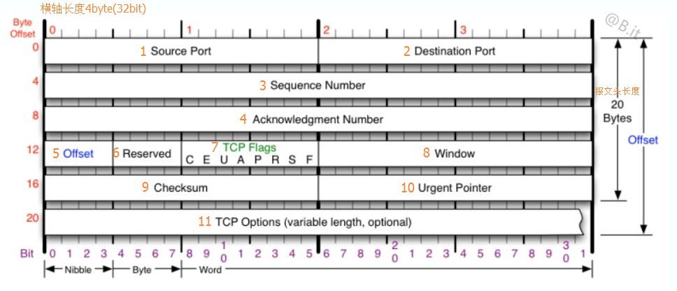
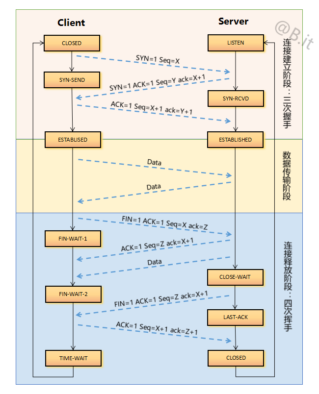

TCP（Transmission Control Protocol，传输控制协议）
TCP是一种面向连接（连接导向）的、可靠的基于字节流的传输层通信协议。TCP将用户数据打包成报文段，它发送后启动一个定时器，另一端收到的数据进行确认、对失序的数据重新排序、丢弃重复数据。
TCP的特点有：
- TCP是面向连接的运输层协议
- 每一条TCP连接只能有两个端点，每一条TCP连接只能是点对点的
- TCP提供可靠交付的服务
- TCP提供全双工通信。数据在两个方向上独立的进行传输。因此，连接的每一端必须保持每个方向上的传输数据序号。
- 面向字节流。面向字节流的含义：虽然应用程序和TCP交互是一次一个数据块，但TCP把应用程序交下来的数据仅仅是一连串的无结构的字节流。
TCP头格式

（1）Source Port（源端口号）：数据发起者的端口号，16bit。
（2）Destination Port（目的端口号）：数据接收者的端口号，16bit。
（3）Sequence Number（顺序号码，Seq）：用于在数据通信中解决网络包乱序（reordering）问题，以保证应用层接收到的数据不会因为网络上的传输问题而乱序（TCP会用这个顺序号码来拼接数据），32bit。
（4）Acknowledgment Number（确认号码，ack）：是数据接收方期望收到发送方在下一个报文段的顺序号码（Seq），因此确认号码应当是上次已成功收到顺序号码（Seq）加1，32bit。
（5）Offset（TCP报文头长度)：用于存储报文头中有多少个32bit(上图的一行)，存储长度为4bit，最大可表示（2^3+2^2+2^1+1）_32bit=60bytes的报文头。最小取值5，5_32bit=20bytes。
（6）Reserved（保留）：6bit, 均为0
（7）TCP Flags（TCP标志位）每个长度均为1bit
- CWR：压缩，TCP Flags值0x80。
- ECE：拥塞，0x40。
- URG：紧急，0x20。当URG=1时，表示报文段中有紧急数据，应尽快传送。
- ACK：确认，0x10。当ACK = 1时，代表这是一个确认的TCP包，取值0则不是确认包。
- PSH：推送，0x08。当发送端PSH=1时，接收端尽快的交付给应用进程。
- RST：复位，0x04。当RST=1时，表明TCP连接中出现严重差错，必须释放连接，再重新建立连接。
- SYN：同步，0x02。在建立连接是用来同步序号。SYN=1， ACK=0表示一个连接请求报文段。SYN=1，ACK=1表示同意建立连接。
- FIN：终止，0x01。当FIN=1时，表明此报文段的发送端的数据已经发送完毕，并要求释放传输连接。
（8）窗口：用来控制对方发送的数据量，通知发放已确定的发送窗口上限。
（9）检验和：该字段检验的范围包括头部和数据这两部分。由发端计算和存储，并由收端进行验证。
（10）紧急指针：紧急指针在URG=1时才有效，它指出本报文段中的紧急数据的字节数。
（11）TCP选项：长度可变，最长可达40字节
备注：ISN（Inital Sequence Number）：初始化Sequence Number，发生在建立连接时。
TCP协议中的三次握手和四次挥手

特别注意
Seq：是发送方当前报文的顺序号码。
ack：是发送方期望对方在下次返回报文中给回的Seq。
建立连接需要三次握手
第一次握手：客户端向服务端发送连接请求包，标志位SYN（同步序号）置为1，顺序号码为X=0。
第二次握手：服务端收到客户端发过来报文，由SYN=1知道客户端要求建立联机，则为这次连接分配资源。并向客户端发送一个SYN和ACK都置为1的TCP报文，设置初始顺序号码Y=0，将确认序号(ack)设置为上一次客户端发送过来的顺序号(Seq)加1，即X+1 = 0+1=1。
第三次握手：客户端收到服务端发来的包后检查确认号码(ack)是否正确，即第一次发送的Seq加1（X+1=1）。以及标志位ACK是否为1。若正确，服务端再次发送确认包，ACK标志位为1，SYN标志位为0。确认号码(ack)=Y+1=0+1=1，发送顺序号码(Seq)为X+1=1。Server收到后确认号码值与ACK=1则连接建立成功，可以传送数据了。
断开连接需要四次挥手
提醒：中断连接端可以是Client端，也可以是Server端。只要将下面两角色互换即可。
第一次挥手：客户端给服务端发送FIN报文，用来关闭客户端到服务端的数据传送。将标志位FIN和ACK置为1，顺序号码为X=1，确认号码为Z=1。意思是说”我Client端没有数据要发给你了，但是如果你还有数据没有发送完成，则不必急着关闭Socket，可以继续发送数据。所以你先发送ACK过来。”
第二次挥手：服务端收到FIN后，发回一个ACK(标志位ACK=1),确认号码为收到的顺序号码加1，即X=X+1=2。顺序号码为收到的确认号码=Z。意思是说“你的FIN请求我收到了，但是我还没准备好，请继续你等我的消息" 这个时候客户端就进入FIN_WAIT状态，继续等待服务端的FIN报文。
第三次挥手：当服务端确定数据已发送完成，则向客户端发送FIN报文，关闭与客户端的连接。标志位FIN和ACK置为1，顺序号码为Y=1，确认号码为X=2。意思是告诉Client端“好了，我这边数据发完了，准备好关闭连接了。”
第四次挥手：客户端收到服务器发送的FIN之后，发回ACK确认(标志位ACK=1),确认号码为收到的顺序号码加1，即Y+1=2。顺序号码为收到的确认号码X=2。意思是“我Client端知道可以关闭连接了，但是我还是不相信网络，怕 Server端不知道要关闭，所以发送ACK后进入TIME_WAIT状态，如果Server端没有收到ACK则可以重传。Client端等待了2MSL后依然没有收到回复，则证明Server端已正常关闭，那好，我Client端也可以关闭连接了。“（在TIME_WAIT状态中，如果TCP client端最后一次发送的ACK丢失了，它将重新发送。TIME_WAIT状态中所需要的时间是依赖于实现方法的。典型的值为30秒、1分钟和2分钟。等待之后连接正式关闭，并且所有的资源(包括端口号)都被释放。）
为什么关闭的时候却是四次挥（握）手？
因为当Server端收到Client端的SYN连接请求报文后，可以直接发送SYN+ACK报文。其中ACK报文是用来应答的，SYN报文是用来同步的。但是关闭连接时，当Server端收到FIN报文时，很可能并不会立即关闭SOCKET，所以只能先回复一个ACK报文，告诉Client端，"你发的FIN报文我收到了"。只有等到我Server端所有的报文都发送完了，我才能发送FIN报文，因此不能一起发送。故需要四步握手。
相关资料
Hypertext Transfer Protocol -- HTTP/1.1
TCP/IP Reference
TCP 的那些事儿（上）
TCP协议中的三次握手和四次挥手(图解)